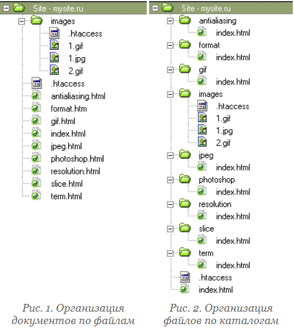

Структура файлов
23.09.2010 Влад МержевичС позиции разработчика, сайт условно можно подразделить на два уровня — логический и физический. На логическом уровне сайт представляет собой совокупность веб-страниц, объединенных между собой единым дизайном, стилем и ссылками. При этом на физическом уровне сайт является и набором файлов разного типа — в состав могут входить программы, документы, изображения и многое другое. Продумывание и создание удобной файловой структуры помогает не только разработчику оптимизировать свою работу, но и посетителю лучше понять строение сайта.
Для простоты будем предполагать, что мы имеем дело с сайтом, который сделан с помощью html-файлов, без всякого веб-программирования.
Прежде чем создавать в корне сайта папки и файлы, необходимо разработать структуру сайта — какие разделы и подразделы будут присутствовать, как они будут называться. Для примера приведем схему сайта посвященного оптимизации графики.
- Главная страница
- Форматы графических файлов
- Разрешение изображений
- Оптимизация в программе Photoshop
- Оптимизация формата GIF
- Оптимизация формата JPEG
- Антиальясинг
- Разрезание изображений
- Список терминов
Какой файл загружать первым
Обычно просмотр сайта начинается с главной страницы. При обилии в корне сайта различных файлов, как веб-сервер узнает, что ему загружать автоматически? Конечно, если путь к файлу указан напрямую, никаких вопросов не возникает. Но в большинстве случаев, адрес сайта указывается коротко, без лишних файлов на конце. Вот тогда читаются настройки сервера и определяется файл, который следует показать, а также, есть ли указанный файл в наличии. Как правило, такой файл имеет имена index.html, index.htm, default.htm, в общем, список можно продолжить. Чтобы не усложнять себе жизнь вычислением, какой же файл главнее, это можно установить самому, используя для этого файл .htaccess, размещая его в корне сайта. Данный файл является конфигурационным для популярного веб-сервера Apache и представляет собой обычный текстовый документ. В нем следует прописать такую строку.
DirectoryIndex index.html index.htmГде через пробел указываются имена файлов, которые следует просматривать на предмет наличия и запускать автоматически. После этого, при указании пути к разным файлам и папками, в браузере будут открываться документы, как показано в таблице (указание протокола http:// для краткости опущено).

Файловая структура сайта
Вернемся теперь к сайту, файловую структуру которого следует создать. Здесь существует два различных подхода. В первом случае, каждому разделу соответствует html-документ, находящийся в корне сайта. Путь к нему будет выглядеть как www.mysite.ru/optimize.html. Альтернативный вариант — создание папок, которые будут соответствовать определенным разделам. В каждой папке размещается файл index.html. Поскольку этот файл указывать в адресе не обязательно, то путь будет выглядеть как www.mysite.ru/optimize. На рис. 1 и рис. 2 показаны два набора организации файлов на сайте.
